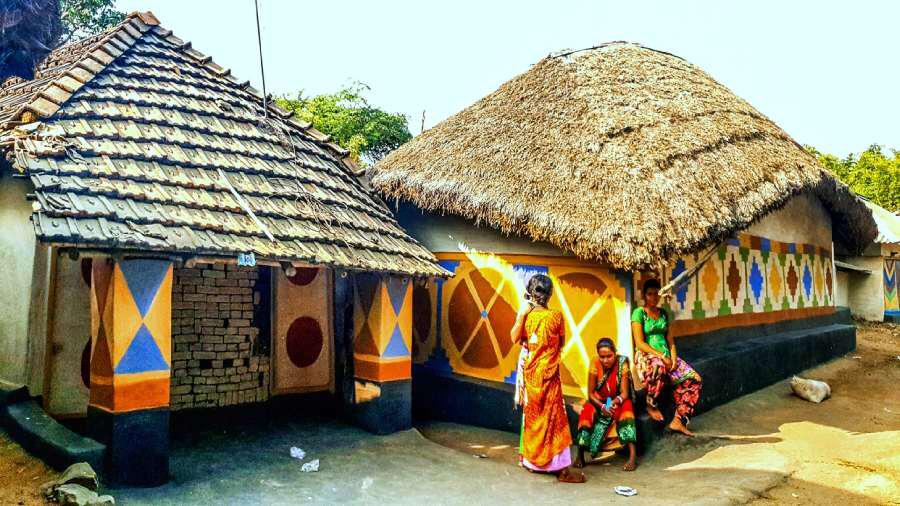

Background: The Designer Who Turned Nostalgia Into Luxury
Sabyasachi began his label in 1999, but his style feels older than any trend cycle. His design voice comes from a place of memory—sepia-toned Bengal homes, vintage jewellery, fading zari borders, old family saris, and the texture of handwoven fabrics.
What fascinated me most while studying him was how confidently he rejected mass-produced glamour. He built his world using:
- Handwoven khadi with its earthy grain
- Benarasi brocade with kadhua butidar motifs
- Rust-gold zardozi with an antique patina
- Tussar silk with a matte, organic texture
- Aari and resham embroidery forming delicate floral jaals
While researching these techniques, I realised they’re not just embellishments
—they represent hours, hands, and heritage. It made me rethink how much value lies behind a single stitch.